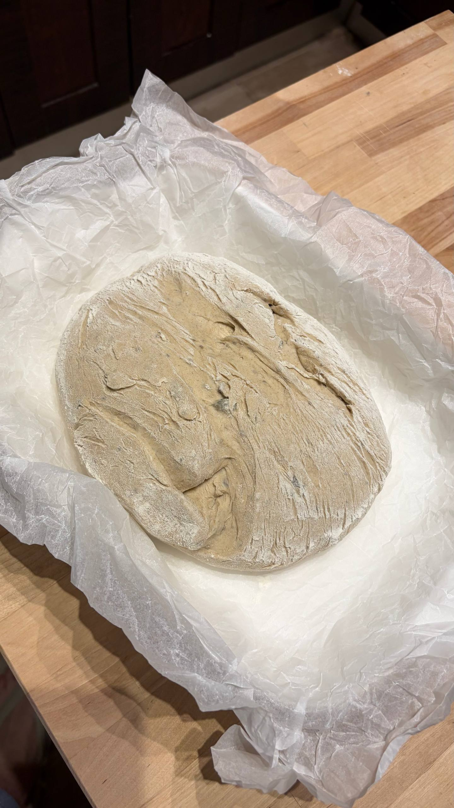
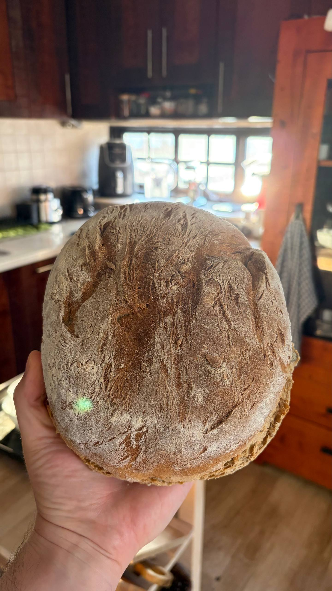
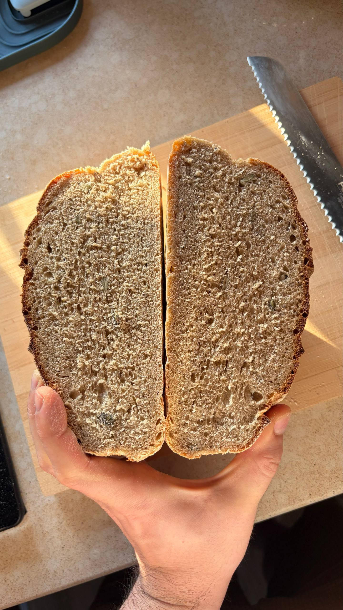

🍯 Полуржаной экспресс-хлеб на меду
Ингредиенты:
- Ржаная мука: 150г
- Пшеничная мука: 200г
- Вода (теплая): 250мл
- Мед: 2 ст. л.
- Сухие дрожжи: 1 ч. л.
- Соль: 1 ч. л.
- Смесь семечек: 3-4 ст. л.
Способ приготовления:
-
Шаг 1: Растворите мед и дрожжи в теплой воде. Оставьте на 5-10 минут для активации.
-
Шаг 2: В большой миске смешайте ржаную и пшеничную муку, соль. Влейте жидкую смесь и перемешайте лопаткой, пока не получится липкое однородное тесто. Добавьте большую часть семечек.
-
Шаг 3: Накройте миску полотенцем или пленкой и оставьте в теплом месте на 45-60 минут для брожения и подъема.
-
Шаг 4: Аккуратно сформируйте буханку, выложите на пергамент, посыпьте сверху оставшимися семечками и выпекайте при 200°C в течение 35-40 минут до красивой корочки.
📸 Фото процесса приготовления:

Этап 1: Липкое тесто после замеса лопаткой

Этап 2: Тесто хорошо увеличилось в объеме после расстойки

Этап 3: Готовая буханка с хрустящей корочкой и семечками
← Назад к выпечке